The pitch
0:00 – 1:10No product on screen yet. This is the founder framing the problem and the three ways a device gets connected — worth keeping close to verbatim, it's the clearest statement of the offer anywhere in the recording.
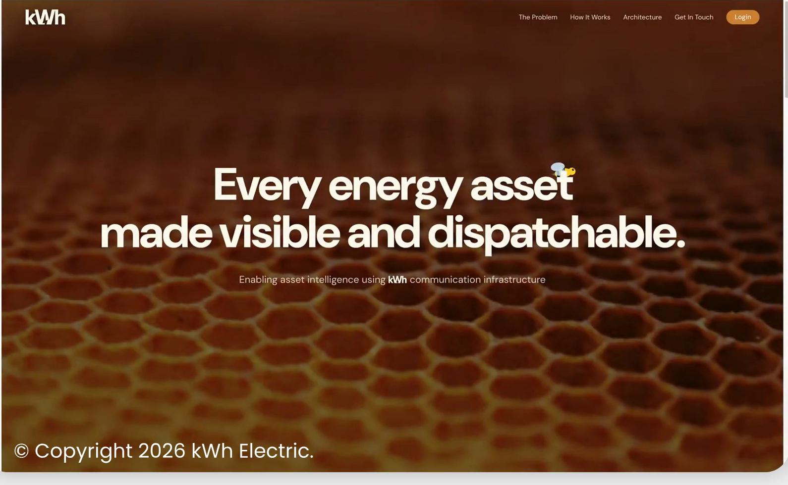
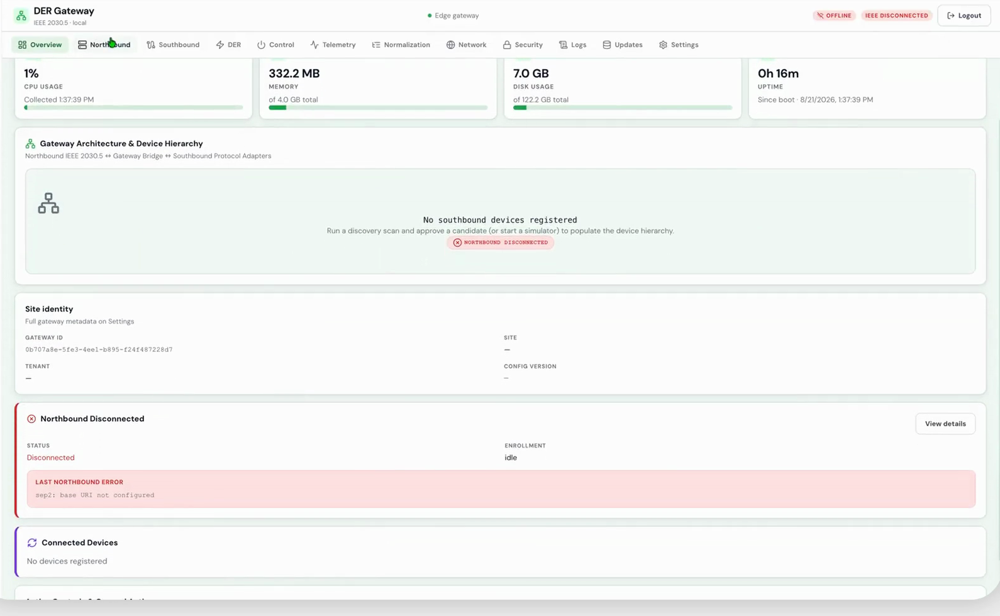
Gateway portal — before
1:10 – 1:41The empty state. Establishes what "not connected yet" looks like, so the payoff later (device online, telemetry flowing) actually reads as a payoff.
Consumer app — onboarding a device
1:41 – 2:39The only portal a homeowner ever touches. Five short beats, sign-in to certificate issuance — this whole sequence is under a minute in the source and should stay tight in the edit, it's the "no truck roll" proof point.
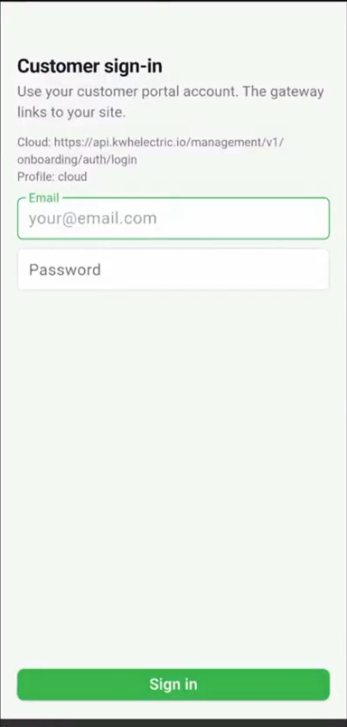
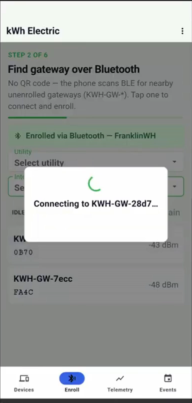
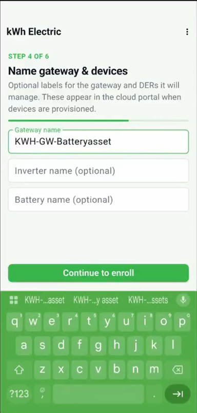
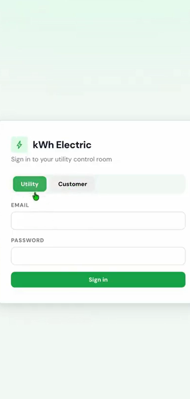
Utility portal — Grid Intelligence
2:39 – 5:23The longest act, and the one with the actual grid-services language: forecasting, procurement, trading. Anchor for the "add grid services" ask — the left nav in the asset-detail and event shots already shows Forecasting, Disaggregation, Procurement Trigger and Flexibility under a "Grid Services" section.
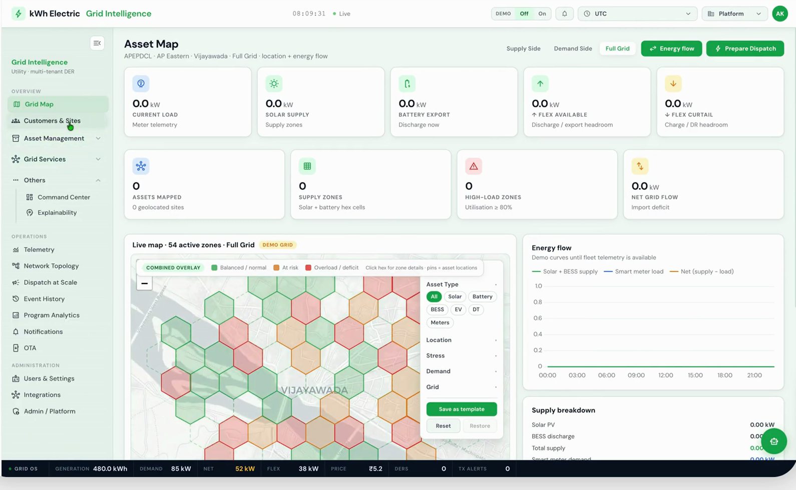
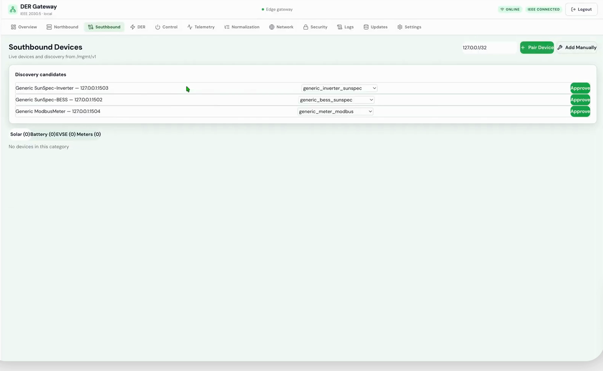
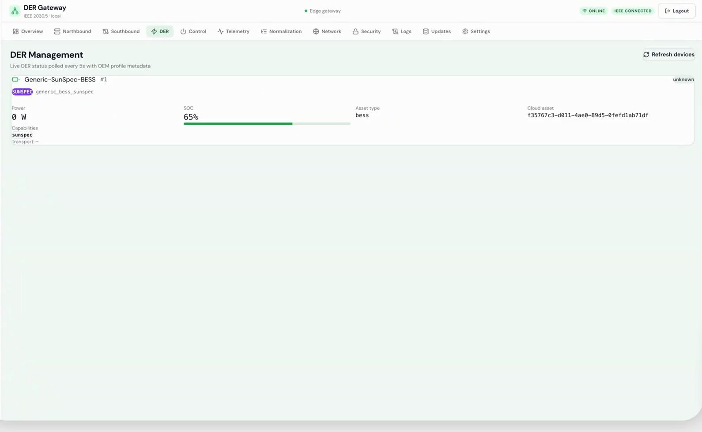
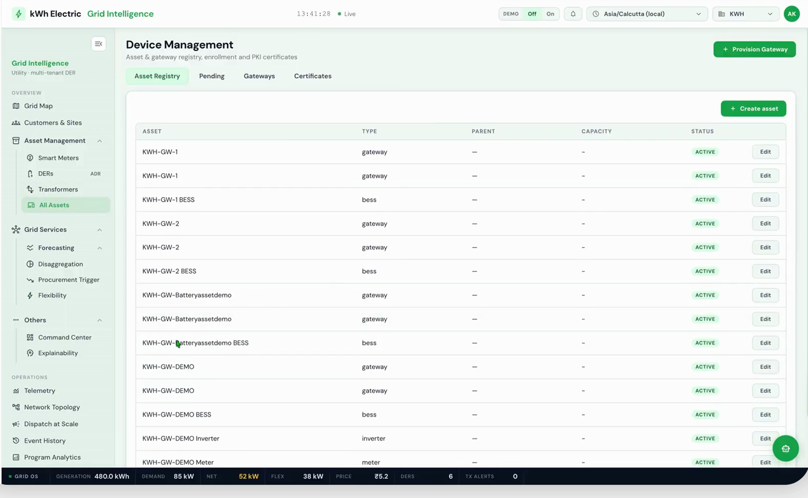
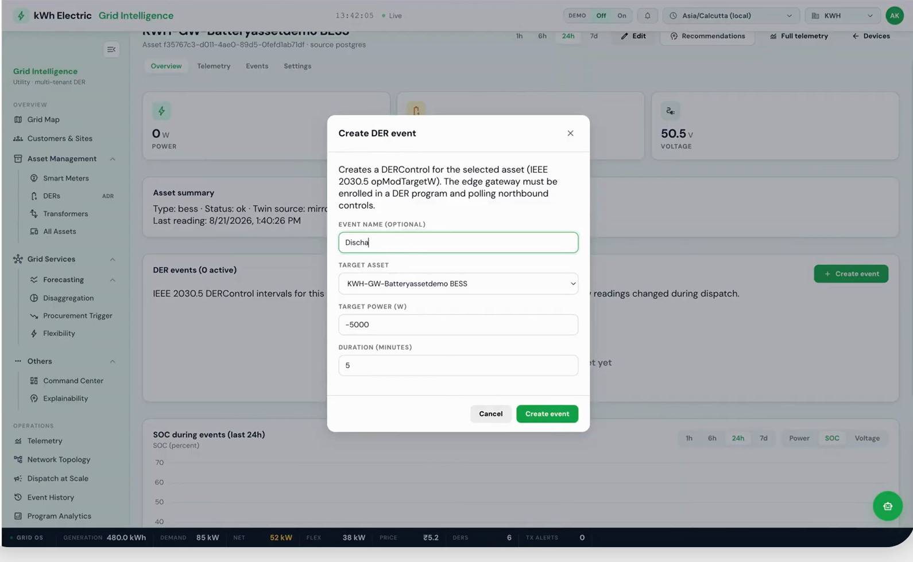
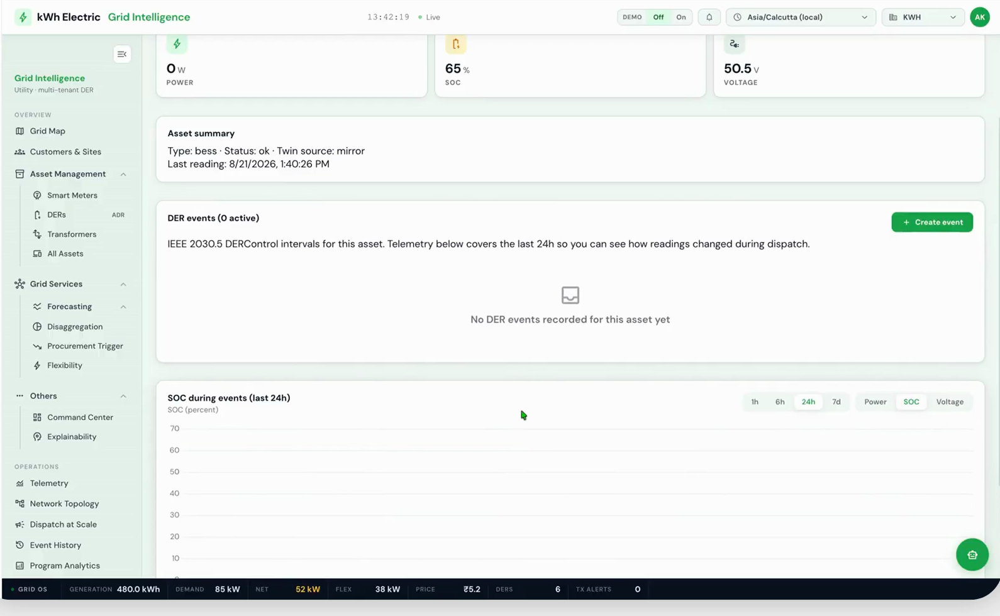
Back to the gateway — the response
5:23 – 6:00The loop closes exactly where Act 2 opened. This is the payoff shot — pair it directly against the "no southbound devices" frame from Act 2 for a strong before/after cut.
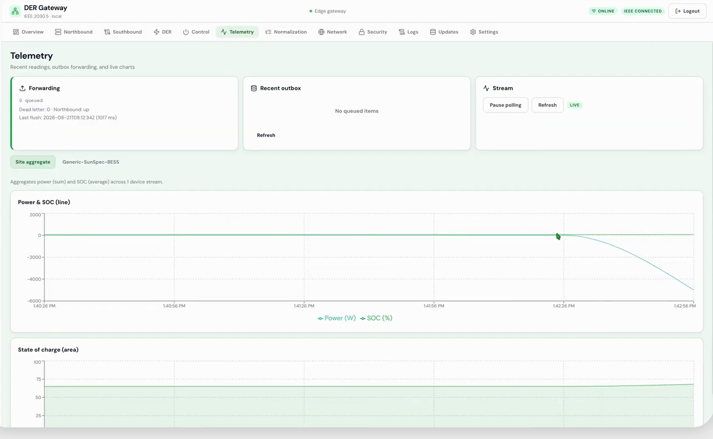
"This is our demonstration for the kWh communications infrastructure. And as we move forward, we want to enable intelligence on the edge — work with our own models, use the data to train models that sit both on the edge and on the utility side."
"We're also working on grid services, where our expertise lies in flexibility and forecasting, which we have already demonstrated through our previous work. And we can provide a lot of other grid services. Thank you so much for your time, and we look forward to talking to you."